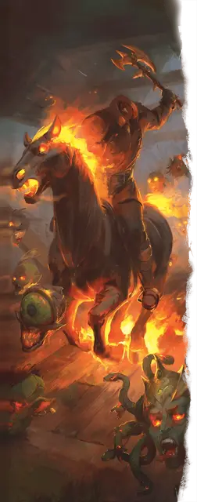

Дуллахан
Dullahan
Средняя Нежить

Класс Доспеха 16 (кираса)
Хиты 135 (18к8 + 54)
Скорость 30 футов
| мод | спас | ||
|---|---|---|---|
| СИЛ | 18 | +4 | +4 |
| ЛОВ | 14 | +2 | +2 |
| ТЕЛ | 16 | +3 | +7 |
| мод | спас | ||
|---|---|---|---|
| ИНТ | 11 | +0 | +0 |
| МДР | 15 | +2 | +2 |
| ХАР | 16 | +3 | +3 |
Навыки Восприятие +6
Сопротивление урону холод, электричество, яд
Иммунитет к состояниям испуг, отравление, очарование
Чувства истинное зрение 120 футов, пассивное Восприятие 16
Языки понимает все, известные при жизни, но не говорит
Опасность 10 (5900 опыта)
Бонус мастерства +4
Особенности
Зов безголового (перезаряжается после короткого или продолжительного отдыха). Если хиты дуллахана опускаются до 0, он не умирает и не становится бессознательным. Вместо этого он восстанавливает 97 хитов. Кроме того, он призывает три мёртвые головы [death's head], по одной каждого вида, в свободном пространстве в пределах 5 футов от себя. Мёртвые головы находятся под контролем дуллахана и ходят сразу после него в порядке инициативы. Кроме того, дуллахан теперь может использовать действия из раздела «Мифические действия». Присудите партии дополнительные 5900 опыта (в сумме 11 800 опыта) за победу над дуллаханом после того, как он использует «Зов безголового».
Легендарное сопротивление (2/день). Если дуллахан проваливает спасбросок, он может вместо этого сделать спасбросок успешным.
Необычная природа. Дуллахан не нуждается в воздухе, еде, питье или сне.
Безголовая охота. Дуллаханы известны тем, что ищут свои потерянные головы, что порождает множество местечковых легенд о безголовых охотниках и бесконечных поисках. Таблица "Легенды о дуллахане" дают информацию о преследованиях дуллахана, которые могут быть предметом местных легенд.
Легенды о дуллахане.
| к4 | Преследования |
| 1 | Дуллахан преследует любого, у кого есть один из осколков его разбитого черепа. |
| 2 | Тщеславный дуллахан преследует своих собственных родственников, стремясь претендовать на голову с её фамильным сходством. |
| 3 | Жадный дуллахан стремится вернуть свой украшенный драгоценными камнями шлем, не заботясь о голове, которая его носит. |
| 4 | Два дуллахана ищут одну и ту же голову, оба полагая, что они являются её настоящими владельцами. |
Действия
Мультиатака. Дуллахан совершает две атаки.
Боевой топор. Рукопашная атака оружием: +8 к попаданию, досягаемость 5 футов, одна цель. Попадание: 8 (1к8 + 4) рубящего урона или 9 (1к10 + 4) рубящего урона при использовании топора двумя руками, плюс 11 (2к10) урона некротической энергией. Если дуллахан наносит критический удар по существу, оно должно преуспеть в спасброске Телосложения Сл 15, иначе дуллахан отрубит ему голову. Существо умирает, если оно не может жить без головы. Существо, которое не имеет головы, не нуждается в ней, или имеет легендарные действия, вместо этого получает дополнительно 27 (6к8) рубящего урона.
Огненный череп. Дальнобойная атака заклинанием: +7 к попаданию, дальность 120 футов, одна цель. Попадание: 14 (2к10 + 3) урона огнём.
Легендарные действия
Дуллахан может совершить 3 легендарных действия, выбирая из представленных ниже вариантов. За один раз можно использовать только одно легендарное действие, и только в конце хода другого существа. Дуллахан восстанавливает использованные легендарные действия в начале своего хода.
Атака. Дуллахан совершает одну атаку.
Ужасающее присутствие (стоит 2 действия). Каждое существо по выбору дуллахана в пределах 30 футов от него должно преуспеть в спасброске Мудрости Сл 15 иначе станет испуганным дуллаханом до конца своего следующего хода.
Охота за головами (стоит 3 действия). Дуллахан перемещается на расстояние, не превышающее его скорость, не провоцируя атак, и совершает одну атаку боевым топором с преимуществом. Если атака попадает, но не является критическим попаданием, то она наносит дополнительно 27 (6к8) урона некротической энергией.
Мифические действия
Если дуллахан использовал особенность Зов безголового, он может использовать приведённые ниже варианты в качестве легендарных действий.
Скоординированное нападение. Дуллахан совершает атаку боевым топором, а затем одна мёртвая голова [death's head], которую дуллахан может видеть в пределах 30 футов от него, может реакцией совершить рукопашную атаку.
Вопль безголового (стоит 2 действия). Из обезглавленного обрубка дуллахана доносится гулкий вопль. Каждое существо по выбору дуллахана в пределах 10 футов от него должно совершить спасбросок Мудрости Сл 15. Каждое существо получает 16 (3к10) урона психической энергией при провале или половину урона при успехе. Если хотя бы одно существо проваливает спасбросок, дуллахан получает 10 временных хитов.
Описание
Дуллаханы — безголовые воины нежити — останки злодеев, которые позволили мести поглотить их. Эти обезглавленные охотники бродят по районам, где они были убиты, убивая невинных в поисках их отрубленных голов или чтобы утолить жажду мести.
Будучи при жизни злыми рыцарями или командирами, дуллаханы придерживаются извращенных кодексов рыцарства или солдатства. Эти павшие чемпионы считают конкретное место своим полем боя. Это порождает истории о призрачных полях сражений, руинах, дорогах, переправах через реки и других стратегических местах, где дуллахан продолжает ужасающую кампанию против живых. После смерти к дуллаханам часто присоединяются те, кто следовал за ними в жизни, либо в виде младшей нежити, такой как скелеты [skeleton] или умертвия [wight], либо ужасающих скакунов, таких как скелет боевого коня [warhorse skeleton] или кошмар [nightmare].